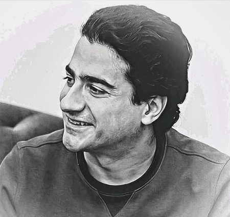
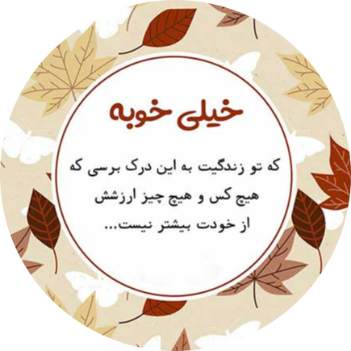

روی قلب خود بنویس که هر روز، بهترین روز در سال است
انرژی مثبت انرژی منفی، تفکر مثبت، تفکر منفی، کلام مثبت و کلام منفی و عبارتهایی مشابه را این روزها زیاد میشنویم.
اما نکته مهم این است که ما در کجای کار قرار داریم. ما جزو مثبتها هستیم یا منفیها؟ کلام ما، ذهن ما، محیط زندگیمان و همه چیزمان بیشتر حاوی و منعکس کننده انرژی مثبت است یا منفی؟ در واقع وقتی به زندگی خودمان نگاه میکنیم، انرژی مثبت بیشتری از آن ساطع میشود یا انرژی منفی بیشتری؟ برخی معتقدند که در ظاهر گفتن اینکه امروز شاد باش، امروز مثبت باش و … ساده است. این عده معتقدند که به این راحتی نمیتوان در زندگی مثبت بود. برعکس برخی معتقدند که میتوان تحت هر شرایطی مثبت فکر کرد و مثبت زندگی کرد.
شما جزو کدام گروه هستید؟ آیا مثبت بودن سخت است یا آسان؟ اصلا آیا میتوان همیشه و در هر وضعیتی مثبت بود و مثبت فکر کرد؟
انرژی مثبت در خانه میتواند شرایط خوبی برای ما ایجاد کند. اما سوال این است که چگونه انرژی مثبت جذب کنیم؟
هفت روش برای جذب انرژی مثبت در زندگی
با مدیتیشن، روزتان را با آرامش آغاز کنید
روز خود را با انرژی مثبت شروع کنید
با دیگران به گونهای رفتار کنید که دوست دارید با شما رفتار شود
بپذیرید که همه چیز قابل کنترل نیست
به خودتان افتخار کنید
در موقعیتهای مختلف به دنبال مثبتها باشید
اهدافتان را رویاپردازی کنید
نیازی نیست که حتما مثل یک مرتاضِ تمام وقت باشید تا از فواید مدیتیشن بهرهمند شوید. هدف از مدیتیشن این است که از محیط اطرافتان آگاهی پیدا کنید، افکارتان را کنترل کنید و تمام پارازیتهایی را که مانع فعالیت روزانهتان میشوند، از بین ببرید. شما گرفتار منفیگرایی هستید که نشات گرفته از ذهنتان است.
لیستی از موسیقیهای شاد را فراهم کنید که لبخند را بر لبانتان میآورد و به شما انرژی میدهد. برای بسیاری از افراد اینها آهنگهایی هستند که با آنها بزرگ شدهاند.
نوستالژی، راهی برای ایجاد احساس شادی بیشتر است. بنابراین ایده خوبی است که لیست موسیقیهای خود را از آهنگهای قدیمی و خاطرهانگیز پر کنید.
برای اینکه از بدرفتاری مردم با خودتان خودداری کنید، بهترین راه این است که شما با آنها خوب رفتار کنید. بدخلقی کردن ضرورتی ندارد. اگر شیوه مسالمتآمیزی برای حل و فصل تناقضات وجود دارد چرا این کار را انجام ندهید.
ناراحت شدن بیش از اندازه برای مسائل کوچک، عصبانیت و غم را برای شما باقی میگذارد. اکثر این مبارزه کردنها ارزشی ندارد.
اضطراب بیش از حد ناشی از شرایطی است که ما کنترل آنها را نداریم. در زندگی، شما همیشه با موقعیتهایی مواجه خواهید شد که در آن شما احساس ناراحتی میکنید. اگر میدانید اکنون نمیتوانید وضعیت را بهبود ببخشید، وقت آن است که آن را بپذیرید و برای پیشبرد کار تلاش کنید.
وقتی احساس خوبی نسبت به خودتان داشته باشید، دیدگاهتان نسبت به جهان نیز تغییر خواهد کرد. صرفا با داشتن احساس خوب نسبت به خود اتفاق خاصی رخ نمیدهد، شما باید آگاهانه شخصیت و تواناییهایتان را به خود یادآوری کنید.
اگر شما فردی هستید که غرق در افکار مسموم و منفی هستید و مدام خود را سرزنش میکنید، به هر جایی که بروید افکار منفی را پخش میکنید.
از طرفی اگر تصمیم بگیرید که احساس بهتری نسبت به خود داشته باشید، اینکه به طور منظم ورزش کنید یا بازی خود را ارتقا دهید، شما تغییری را در نحوه درکتان از جهان و رویکردتان نسبت به زندگی تجربه خواهید کرد. ورزش منظم، هورمون اندورفین را در بدن پخش میکند که باعث بالا بردن روحیهتان میشود.
در هر موقعیتی که قرار میگیرید هرچند همیشه آسان هم نیست، به دنبال عوامل امیدوارکننده باشید. زمانیکه در هر شرایطی مصرانه در جستجوی خوبیها هستید، موقعیت را بهتر مدیریت خواهید کرد.
بهدنبال نتایج مثبت بودن در یک وضعیت منفی به عنوان مکانیسمی دفاعی عمل میکند تا شما لحظات سخت زندگیتان را کنترل کنید.

همایون شجریان

حتی تاریک ترین شب نیز به پایان میرسد و خورشید طلوع میکند.
جذب انرژی مثبت
قرار داشتن در وضعیت منفی جلوی پیشرفت شما را در زندگی میگیرد. احتمالا باید دلایلی برای قرار گرفتن شما در شرایطی منفی وجود داشته باشد. زمانی که تصمیم میگیرید از این وضعیت خارج شوید، متوجه میشوید که بیشتر مشکلاتتان حلشدنی هستند.
گاهی اوقات وقتی در موقعیتی منفی قرار میگیریم اگر شیوه درست برخورد با آن را ندانیم، اوضاع را بدتر میکنیم. داشتن رویکرد مثبت میتواند در مبارزه با سختترین مشکلات زندگی به ما کمک کند؛ شما باید غرق در انرژی مثبت شوید.
باید ببینیم چگونه میتوانیم انرژی مثبت جذب کنیم؟ انرژی مثبت از کجا وارد زندگی ما میشود؟ آیا میتوانیم با قانون جذب انرژی مثبت بیشتری به زندگی خودمان بیاوریم؟ چگونه از شر انرژیهای منفی خلاص شویم؟ در این مقاله هفت روش برای جذب انرژی مثبت در زندگی توضیح داده میشود. میتوانید مقاله انرژی مثبت در زندگینامه آریانا هافینگتون را مطالعه کنید.